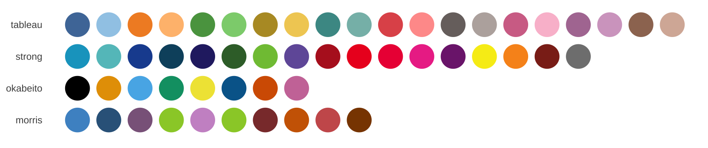

Import
Import fonts the first time.
library(extrafont)
plummy::import_inter()
plummy::import_plex()
plummy::import_nunito()
plummy::import_barlow()
# check that font names look right
extrafont::fonts()
extrafont::fonttable()Load fonts for use. Run once per session.
extrafont::loadfonts()Use theme
Let’s create some sample plots.
p1 <- ggplot(iris, aes(Sepal.Length, Sepal.Width)) +
geom_point() +
labs(
title = "Iris dataset",
subtitle = "Comparison of iris species",
x = "Sepal length",
y = "Sepal width",
caption = "Source: Edgar Anderson"
)
p2 <- p1 + theme_inter()
p3 <- p1 + theme_plex()
p4 <- p1 + theme_nunito()
wrap_plots(p1, p2, p3, p4, nrow = 2, ncol = 2)
Fig: Comparison of default theme, inter, plex and nunito.
To set theme for all plots in a session, use
Use palette
p1 <- ggplot(iris, aes(Sepal.Length, Sepal.Width, color = Species)) +
geom_point() +
labs(
title = "Iris dataset",
subtitle = "Comparison of iris species",
x = "Sepal length",
y = "Sepal width",
caption = "Source: Edgar Anderson"
)+
theme(legend.position = "top")
p2 <- p1 + scale_color_tableau() + theme_inter(grid = "Y", leg = "h")
p3 <- p1 + scale_color_tableau() + theme_plex(grid = "Y", leg = "h")
p4 <- p1 + scale_color_tableau() + theme_nunito(grid = "Y", leg = "h")
wrap_plots(p1, p2, p3, p4, nrow = 2, ncol = 2)
Fig: Custom color scale, legend in placed on the top and only horizontal gridlines are displayed.
p2 <- p1 + scale_color_tableau() + theme_inter(axis = FALSE, grid = FALSE, leg = "h")
p3 <- p1 + scale_color_tableau() + theme_plex(axis = FALSE, grid = FALSE, leg = "h")
p4 <- p1 + scale_color_tableau() + theme_nunito(axis = FALSE, grid = FALSE, leg = "h")
wrap_plots(p2, p3, p4, nrow = 1)
Fig: Plain theme with no axis and no gridlines.
p1 <- ggplot(iris, aes(Sepal.Length, Sepal.Width, color = Species)) +
geom_point() +
facet_grid(~Species)+
labs(
title = "Iris dataset",
subtitle = "Comparison of iris species",
x = "Sepal length",
y = "Sepal width",
caption = "Source: Edgar Anderson"
)+
theme(legend.position = "top")
p2 <- p1 + scale_color_tableau() + theme_inter(leg = "h")
p3 <- p1 + scale_color_tableau() + theme_plex(leg = "h")
p4 <- p1 + scale_color_tableau() + theme_nunito(leg = "h")
wrap_plots(p1, p2, p3, p4, nrow = 2, ncol = 2)
Fig: Example with facetting.
To set palette for all plots in a session, use
library(ggplot2)
options(ggplot2.discrete.colour = palette_tableau()(20))
options(ggplot2.discrete.fill = palette_tableau()(20))Fonts
Available fonts in the package can be listed.
## font family variant
## 1 Barlow Light barlow light
## 2 Barlow Medium barlow medium
## 3 Barlow barlow regular
## 4 Barlow SemiBold barlow semibold
## 5 Barlow Thin barlow thin
## 6 IBM Plex Sans Light ibmplexsans light
## 7 IBM Plex Sans Medium ibmplexsans medium
## 8 IBM Plex Sans ibmplexsans regular
## 9 IBM Plex Sans SemiBold ibmplexsans semibold
## 10 IBM Plex Sans Thin ibmplexsans thin
## 11 Inter Light inter light
## 12 Inter Medium inter medium
## 13 Inter inter regular
## 14 Inter SemiBold inter semibold
## 15 Inter Thin inter thin
## 16 Nunito Light nunito light
## 17 Nunito Medium nunito medium
## 18 Nunito nunito regular
## 19 Nunito SemiBold nunito semiboldBelow is a preview of fonts.

Below is an overview of all fonts and it’s variants.

It is also possible to cusstomise the themes avilable within the
package or to use custom fonts by providing font names to the
family arguments in theme_custom().